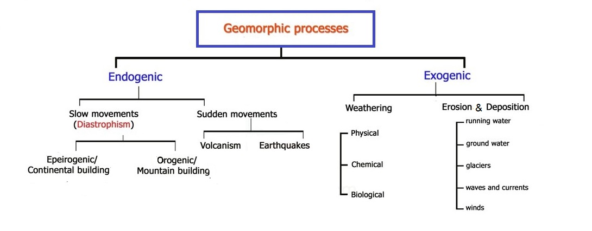

Geomorphic Processes
The earth’s surface is dynamic. It is constantly changed by
external forces originating within the earth’s atmosphere and by
internal forces from within the earth. These "Earth Changing"
processes are collectively referred to as
Geomorphic Processes.
Types of Geomorphic Forces/Processes
-
The external forces are known as exogenic forces. They are
responsible for wearing down (degradation) of
relief/elevations and filling up (aggradation) of
basins/depressions, on the earth’s surface. Water, ice, wind
etc., are the major geomorphic agents.
-
The internal forces are known as endogenic forces. These
forces elevate or build up parts of the earth’s surface and
hence the exogenic processes fail to even out the relief
variations of the surface of the earth.
In general terms, the endogenic forces are mainly land building
forces and the exogenic processes are mainly land wearing
forces.

Exogenic Processes
All the exogenic geomorphic processes i.e., weathering, erosion,
transportation and deposition are covered under a general term,
denudation.
Weathering
Weathering is the mechanical disintegration and chemical
decomposition of rocks through the actions of different agents
like rivers, wind, sea waves and glaciers. It is an
in-situ or on-site process as very little or no motion of
materials takes place in weathering. Weathering is of three
types:
Physical Weathering:
-
Physical or mechanical weathering depends on some applied
forces like:
-
gravitational forces such as overburden pressure, load and
stress;
-
expansion forces due to temperature changes, crystal growth
or animal activity;
-
water pressures controlled by wetting and drying cycles.
-
These processes are small and slow but can cause great damage
to the rocks because of continued fatigue the rocks suffer due
to repetition of contraction and expansion.
Chemical Weathering:
-
It involves decomposition due to chemical changes. There are
various chemical processes, which cause chemical weathering
such as:
-
Dissolution: invloves dissolution of of particles and
minerals from the rocks with the help of water.
-
Oxidation: is the loss of electrons. The best example
for this is rusting of iron. The oxidation of Fe
2+ (iron) by oxygen and water to form Fe
3+ oxides and hydroxides gives the affected rocks
a reddish-brown coloration on the surface which crumbles
easily and weakens the rock.
-
Carbonation: Carbonation is the reaction of carbonate
and bicarbonate with minerals. Carbon dioxide dissolves in
water to form carbonic acid, that acts as a weak acid.
Calcium carbonates and magnesium carbonates are dissolved in
carbonic acid and are removed in a solution without leaving
any residue.
-
Hydration: Hydration is the chemical addition of
water. Continued repetition of this process causes fatigue
in the rocks and may lead to their disintegration.
-
Hydrolysis is a form of chemical weathering in which
only part of a mineral is taken into solution. The rest of
the mineral is transformed into a new solid material, such
as a clay mineral.
Biological Weathering: The weathering of rocks as a
result of plant growth, animal movements or human activities
comes under this category.
Note: Weathering, breaks down or dissolves rock, but
does not necessarily involve movement.
Erosion and Deposition
Erosion is the processes of removal of soil or a rock, from one
location and then transportation (or deposition) of it to
another location. Hence it is an ex-situ process.
Most erosion is performed by liquid water, wind, or ice
(glacier). If the wind is dusty, or water or glacial ice is
muddy, erosion is taking place. The brown color indicates that
bits of rock and soil are suspended in the fluid (air or water)
and being transported from one place to another. This
transported material is called sediment.
Endogenic Forces
Endogenic forces are of two types: sudden and slow forces.
Sudden Endogenic Forces or Catastrophic Forces
-
Sudden Endogenic Forces are the results of long period of
preparation deep within the earth. But their culminative
effects on the earth's surface are quick and sudden.
-
Volcanoes and Earthquakes
are the examples of Sudden Endogenic Forces.
Slow Endogenic Processes or Diastrophism
-
All processes that move, elevate or build up portions of the
earth’s crust come under diastrophism.
- They include:
-
Orogenic processes: involves mountain building
through severe folding and affecting long and narrow belts
of the earth’s crust.
-
epeirogenic processes: involves uplift or warping of
large parts of the earth’s crust.
-
earthquakes involving local relatively minor
movements;
-
plate tectonics involving horizontal movements of
crustal plates.
-
All these processes cause pressure, volume and temperature
(PVT) changes which in turn induce metamorphism of rocks
-
Note: Orogeny is a mountain building process, while
Epeirogeny is a continental building process.